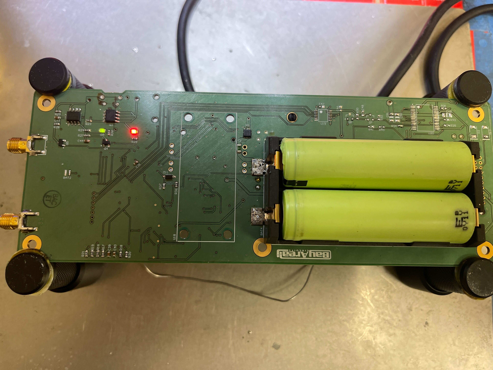
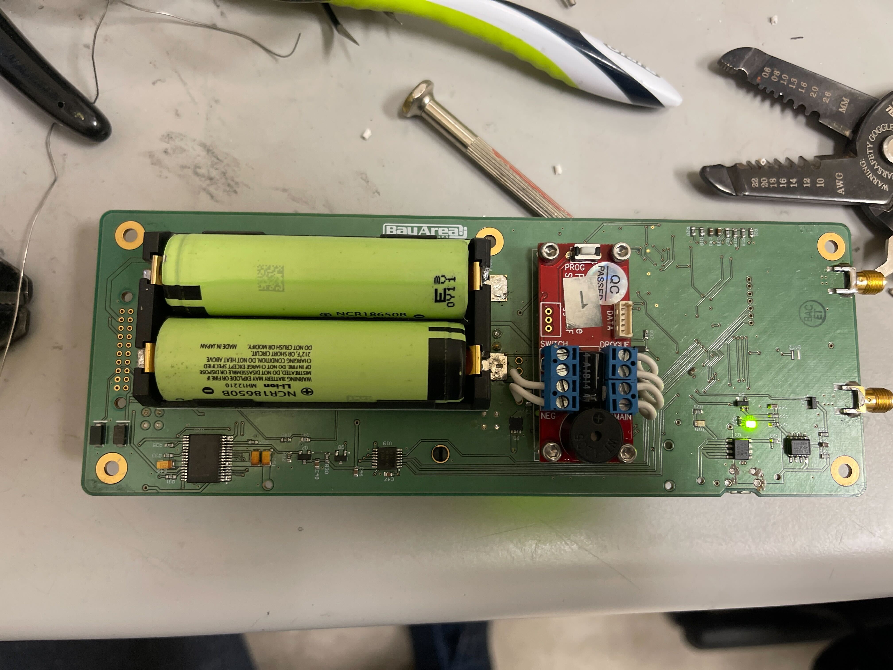

Vrakas Labs
Here at Vrakas Labs, we manufacture and sell a range of avionics systems for research and amateur use.
StratoChovy
StratoChovy is a rocket flight computer, which integrates both an in-house altimeter and deployment system, in addition to a 3rd party StratologgerCF altimeter, to provide dis-similar hardware redundancy.


Base Price: 1000$
Please reach out to tim@vrakaslabs.net to order.